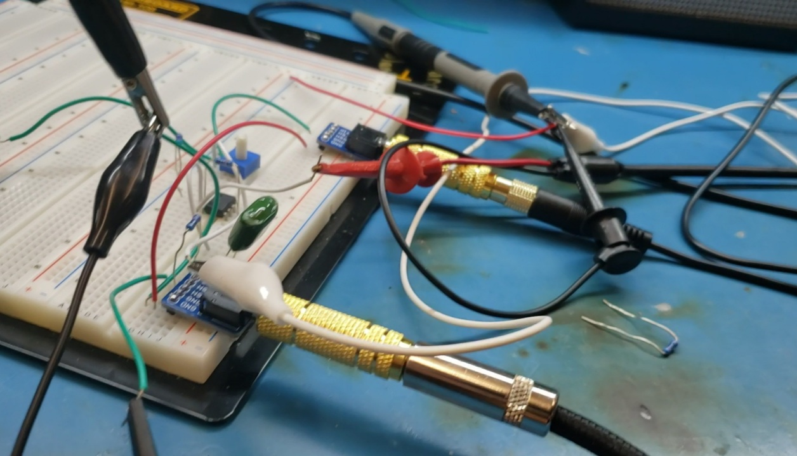
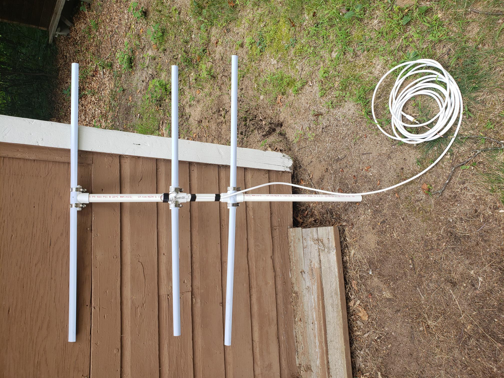
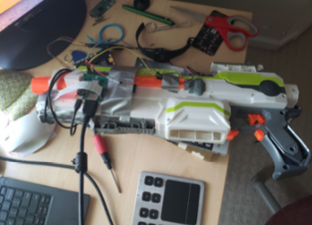
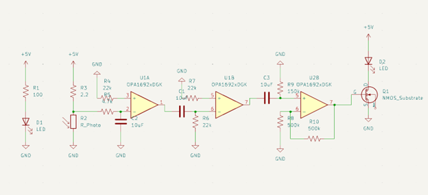

Hello, I'm a Junior Electrical Engineering undergraduate at Purdue University! I'm interested in all sorts of things like astrophotography, amateur radio, tinkering with circuits and Arduinos and plenty more. This webpage is my own documentation of anything I do that I personally deem to be "cool enough" to put on the internet. I hope anyone viewing this will find interest in my projects, and If you have any questions, comments or want to get in touch with me for any reason, please email me at slamovichaaron@gmail.com.
I designed an overdrive pedal to distort audio from an electric guitar input. This uses a simple operational amplifier to amplify the signal beyond the ability of the voltage supply to keep up with the gain. This results in the peaks of the signal being "cut off" because they go beyond the opamp's ability to recreate the signal at its greatest magnitudes. For signal processing or data logging this is horrible, but for Jimi Hendrix it's rock on! I also included a potentiometer between the output and negative input of the opamp to provide variability on the opamp's gain so the amount of distortion could be varied.
I recently got my HAM radio technician license (callsign KE9AVI if anyone wants to talk over the airwaves old-fashioned style) and I've been using what I've learned to have fun with radio in general including *attempting* to talk to astronauts and "listening" to the sun. The image below is a yagi-uda antenna I built out of PVC tube and tape measure, a common DIY design on the internet. I combined it with my SDR radio and SDR++ software to try listening to the sun. I managed to get modest results with noise strength increasing by a few decibles when I pointed my antenna towards the sun. This experiment is not what I would call scientifically rigorous but it was lots of fun.
This project was definitely a blast! (Ha.) I wanted to make something my middle-school self would be proud of, so I made a NERF gun mod to automatically shoot at my brother so I wouldn't have to press the trigger (it works on any person though). I used the NERF Modulus as the base for my mod because it was a convenient size and already had fly wheels in it so it was semi-automatic. My challenge was modifying it to be fully automatic. A webcam at the front of the blaster sends a video stream to an onboard raspberry pi running a TFLite object detection model. I used open cv to track the bounding boxes of the people detected in the video stream and wrote a python script using a gpio library to actuate a servo when the bounding box of a person was near the center of the frame. I had to remove some plastic scaffolding inside the gun to be able to fit the servo inside but once I did it was quite snug. The servo controlled a plunger that would press a dart between the fly wheels to send it flying.
I made this project with my lab partner as a final project in our electrical engineering fundamentals lab. The conceptual founation behind the monitor is that each heartbeat will cause body tissue to flush with blood. The amount of infrared light passing through the finger is measured with the idea that an increase in blood will absorb more light allowing us to detect each heartbeat by an increase in IR absorbance. An infrared LED is used as a light source and an infrared photo-resistor is used as the infrared sensor. I used the photo-resistor as part of a voltage divider so that the voltage would change as the resistance of the photo-resistor changed with the amount of infrared absorbance. This provided a small spike in voltage with each heartbeat, but the signal was obscured by background noise such as RF signals and static discharge. To "clean" the input signal I added a low-pass filter with a center frequency of 100 HZ (the assumed upper limit of my resting heart rate) and a high-pass filter with a center frequency of 40 HZ (the assumed lower limit of my resting heart rate). Finally, I added hysteresis as the last part of my signal processing. This compared the current signal to a moving average of the signal's history. I used a comparator made with an opamp to compare the current signal to its hysteresis. If there was a significant difference the comparator would act as the simplest possible analog to digital converter and provide a pulse of current to light an indicator LED.
The image above displays the digital output of the comparator in orange and the output of the filtered signal in blue.
I used Ruby on Rails and PostgreSQL to design the front end and backend of a genetic database storing over 20,000 genes including information on targeted drugs and common gene mutations. Before building this project I had only made static webpages before with HTML and CSS, so I had to learn a lot on the fly. One of the challenges I faced was finding a way to load so much data onto the website. I couldn't type all the information in by hand so I wrote python scripts to take CSV files and automatically load them into my database, so I could run the process before I went to bed and wake up to the finished result. Code can be found here: https://github.com/aaronSlamovich/NucleoDepot